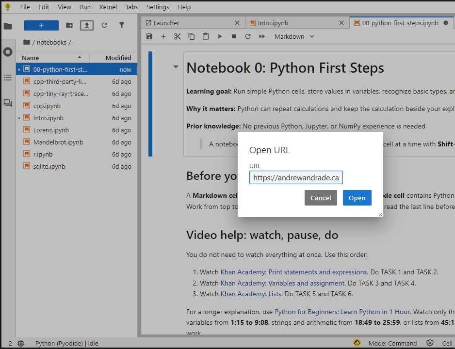
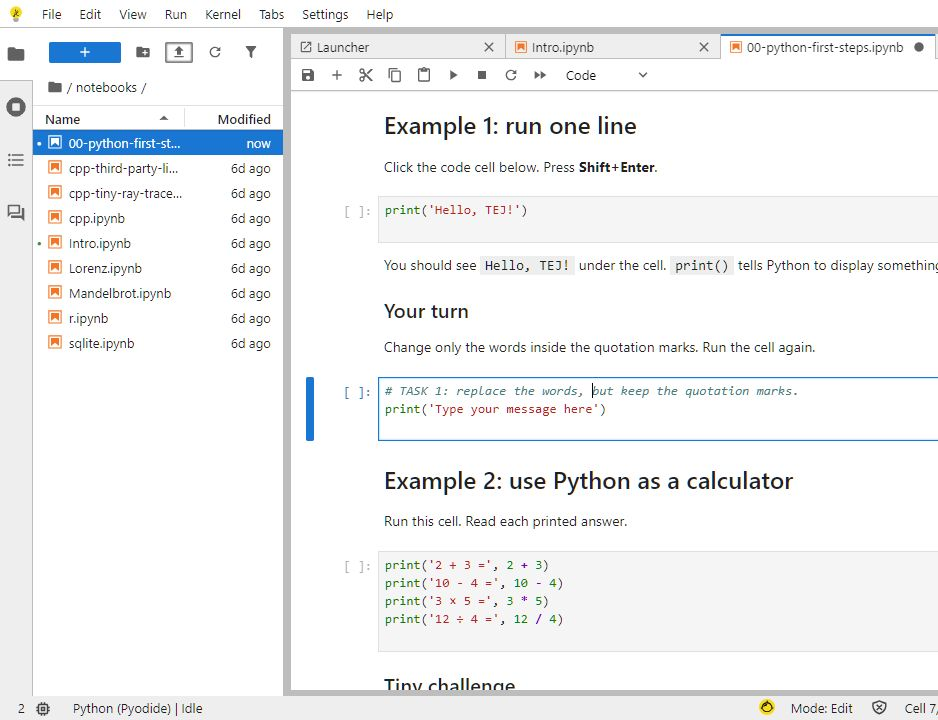
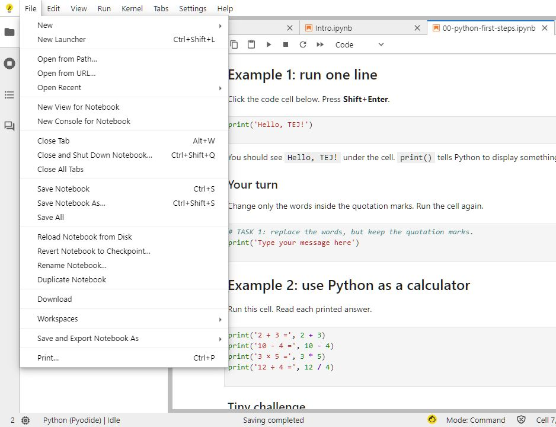

Assignment: Python First Steps in Jupyter
What you will do
- Run Python code with Shift+Enter.
- Change text and numbers.
- Use variables, types, lists, and one NumPy array.
- Fix the code until its checks pass.
Why this is useful
Python follows instructions exactly. Quotation marks, brackets, commas, names, and spelling matter.
What you will make
You will complete a small notebook that starts with print('Hello, TEJ!'). By the end, you will change one number in a three-number array.
You do not need previous Python, Jupyter, NumPy, or linear-algebra experience.
Before you start
Click OPEN JUPYTERLITE.
Choose File > Open from URL.
Paste this notebook link:
https://andrewandrade.ca/tech-edu-resources/assets/tej-computational/notebooks/00-python-first-steps.ipynbClick Open.
Choose Python (Pyodide) if asked.
If that does not work, download Notebook 0, then use the Upload Files button in JupyterLite.
What to click
1. Open the notebook
Choose File > Open from URL. Paste the notebook link and click Open.

2. Run a cell
Click a code cell. Press Shift+Enter.

3. Download your work
Choose File > Download before you leave.

Need more help opening the notebook? Use the step-by-step JupyterLite guide.
Videos
Watch one short video. Then do the matching tasks.
| Watch | Then do |
|---|---|
| Khan Academy: Print statements and expressions | TASK 1 and TASK 2 |
| Khan Academy: Variables and assignment | TASK 3 and TASK 4 |
| Khan Academy: Lists | TASK 5 and TASK 6 |
Need more help?
Open Python for Beginners: Learn Python in 1 Hour. Watch only the part you need.
| Topic | Watch this part |
|---|---|
| First program and variables | 1:15 to 9:08 |
| Strings and arithmetic | 18:49 to 25:59 |
| Lists | 45:11 to 48:47 |
Pause the video while you work. If YouTube is blocked, use the short videos.
Basic assignment
- Open Notebook 0.
- Watch the first short video. Complete TASK 1 and TASK 2.
- Watch the variables video. Complete TASK 3 and TASK 4.
- Watch the lists video. Complete TASK 5 and TASK 6.
- Run the notebook from top to bottom.
- Fix any red errors until the checks pass.
- Download and submit the
.ipynbfile.
Submit only your completed notebook. You do not need video notes.
1. Learn the two cell types
| Cell type | What it contains | What you do |
|---|---|---|
| Markdown | directions | read it |
| Code | Python instructions | edit it and press Shift+Enter |
Work from the top of the notebook to the bottom. Run every working example before changing it.
2. Print one line
Run:
print("Hello, TEJ!")You should see Hello, TEJ! under the cell. Change only the words inside the quotation marks and run it again.
3. Use Python as a calculator
The notebook shows four operations:
2 + 3
10 - 4
3 * 5
12 / 4Python uses * for multiplication and / for division. Complete the tiny challenge by changing two numbers so the answer is 10.
4. Store values in variables
A variable is a name that stores a value.
voltage_V = 9.0Read this as “store 9.0 in voltage_V.” The = sign stores the value; it is not asking a question.
5. Recognize four basic types
| Python type | Plain meaning | Example |
|---|---|---|
int |
whole number | 1000 |
float |
number with a decimal point | 9.0 |
str |
text inside quotation marks | "resistor" |
bool |
True or False |
False |
Run type(value) to ask Python what kind of value it is. Complete the four starter variables in the notebook.
6. Calculate with variables
The notebook uses Ohm’s law:
\[ I=\frac{V}{R} \]
current_A = voltage_V / resistance_ohmChange the resistance to 2000.0. Run the cell and check the new current.
7. Keep several values together
Suppose you test a circuit at three voltages. You could create three separate variables:
voltage_1_V = 1.5
voltage_2_V = 3.0
voltage_3_V = 4.5That code works, but the three readings are not grouped together. A list puts them together under one name.
8. Use a list as the first container
A list stores several values inside square brackets:
voltage_list_V = [1.5, 3.0, 4.5]Each stored value has a numbered position called an index:
| Index | 0 |
1 |
2 |
|---|---|---|---|
| Stored voltage | 1.5 V |
3.0 V |
4.5 V |
Python starts counting indexes at zero:
[0]selects the first value;[1]selects the second value;[2]selects the third value.
Replace the starter list and print its third value.
9. Make a NumPy array
A NumPy array stores numbers in order. Square brackets hold the numbers, and commas separate them.
| Place | First | Middle | Last |
|---|---|---|---|
| Number | 1.0 |
2.0 |
3.0 |
10. Build the first NumPy array
NumPy is the tool that makes the array. Run this code without changing it:
import numpy as np
numbers = np.array([1.0, 2.0, 3.0])
print(numbers)The output is [1. 2. 3.]. Those are the same three numbers.
11. Small task
- Find the middle number,
2.0. - Change only
2.0to4.0. - Press Shift+Enter.
- Keep fixing the code until it prints
Checks passed.
Check your work
- TASK 1 through TASK 6 are complete.
- Every cell has been run from top to bottom.
- The final code cell prints three numbers.
- The final code cell prints
Checks passed.
Save and submit
Choose File > Download. Rename the file:
studentnumber-lastname-python-first-steps.ipynbExample: 123456789-Smith-python-first-steps.ipynb. Keep the .ipynb ending.
Common issues
| Problem | Try this |
|---|---|
| Nothing happens | Click inside the cell and press Shift+Enter. |
NameError |
Check the variable spelling and run the earlier cell that creates it. |
SyntaxError |
Check quotation marks, brackets, and punctuation. |
| The answer looks old | Choose Kernel > Restart Kernel and Run All Cells. |
| NumPy does not load | Confirm that the selected kernel is Python (Pyodide). |
Help improve this lesson (optional)
If something got in the way, tell the teacher:
- Which step or word was unclear?
- What do you still not know how to do?
- What one change would make this easier for the next student?
If you can fix the wording, example, screenshot, or starter code, show the teacher. A useful fix may be added to the course website and credited to you.